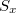
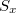

| SPSSによる統計的データ解析入門 |
| SPSSによる統計的データ解析入門 |
奥村 太一（上越教育大学）
2012年3月15日
SPSSのデータファイルは“.sav”という拡張子を持つ。 データファイルを開くとまず「データビュー」といわれる「ケース×変数」の行列形式のデータセットが立ち上がる。 1
![\includegraphics[width=8cm]{dataeditor.ps}](images/img-0001.png)
ウィンドウ下のタブで「データビュー」と「変数ビュー」の切り替えを行うことができる。 「変数ビュー」では各変数について変数名，表示する桁数，欠測の扱い，変数の尺度など細かい情報を設定することができる。
ここで言う基礎統計量とは最大値や最小値，平均値や中央値など代表値といわれるものや，分散や標準偏差といった散布度を示す統計量のことである。 本格的な分析に入る前にこうした基礎統計量を算出しておくことでデータの大まかな傾向を確認したり，入力ミスや異常な外れ値が存在しないかを事前にチェックしておくことができる。 2
まず，国数英データを用いて基礎統計量を算出する。 [分析]-[記述統計]-[記述統計]を選択。
「記述統計」というウィンドウが立ち上がる。 ここでは，記述統計を算出したい変数を選択する。
![\includegraphics[width=10cm]{kijutsu2.ps}](images/img-0004.png)
記述統計を算出したい変数をクリックして[  ]ボタンをクリックすると，変数が右のボックスに移動する。
]ボタンをクリックすると，変数が右のボックスに移動する。
![\includegraphics[width=10cm]{kijutsu3.ps}](images/img-0006.png)
[OK]ボタンをクリックすると，「SPSSビューア」が立ち上がり，結果が表示される。 ここでは，度数，最小値，最大値，平均値，標準偏差が計算された。 3
ここまで基本的な記述統計量の算出を行ったが，これでは各変数ごとの情報しか得られない。 相関係数を算出することで，複数（基本的には2つ）の変数間相互の関係を知ることが可能となる。 ここでいう「変数間相互の関係」とは，例えば「国語の成績が高い人ほど英語の成績も高いという傾向がある」といった情報のことである。
変数 および
および の間の相関係数は以下の式で計算される。 4
の間の相関係数は以下の式で計算される。 4
 |
 |
(1) | ||
 |
 |
(2) |
このうち， はとの共分散，および
はとの共分散，および をとの標準偏差である。
をとの標準偏差である。
相関係数は2変数が完全に正の直線的な関係にある場合1を，負の直線的な関係にある場合-1の値を取る。 また2変数間に直線的な関係が認められない場合は0となる。 *ページの図は相関係数の値とそれに対応する2変数間の散布図を示したものである。
ただし，相関係数はあくまで2変数間の「直線的」な関係を示すものであり，仮に曲線的な関係にあった場合，それを正しく検出することはできない。 5 また，サンプルが何らかの変数によって群分けされているような場合や変数の範囲について切断が生じている場合にも不適切な相関係数が算出される可能性がある。 従って，相関係数を算出するだけでなく必ず散布図も出力して視覚的に関係性を確認することが重要である。
![\includegraphics[width=15cm]{scatterplots.ps}](images/img-0017.png)
データエディタのメニューバーから[分析]-[相関]-[2変量]の順でクリックする。
「2変量の相関分析」というウィンドウが立ち上がる。
分析の対象としたい変数を選択して[ ]ボタンをクリックし左から右のボックスに移す。
[OK]を押すとSPSSビューアが立ち上がり，結果が表示される。
この例の場合，国語と数学では.312，国語と英語では.580，数学と英語では.588という相関係数の値が得られた。 相関の大きさとしては各教科とも中程度の大きさの相関があったといえる。
また同時に統計的検定がなされ，その結果が有意確率および有意であることを表すシンボル（“ * "や“ ** "）によって表示されている。
統計的検定とは，ある仮説（一般には「帰無仮説」と呼ばれる）の真偽について，統計学的に意思決定を行う手法のことである。 統計的検定では，帰無仮説とよばれる仮説が設定され，これを非合理的なものとして棄却するかどうかが興味の関心である。 帰無仮説としては，通常「相関係数はゼロである」や「実験の効果はゼロである」といった「点ゼロ仮説」が設定される。 そして実際にデータを取ってみて，そのデータと帰無仮説とが整合的かどうかを統計学の理論にもとづいて判断する。
「統計的に有意であった」とは，「帰無仮説が棄却された」ということと等しい。 すなわち，「得られたデータから察するに相関係数がゼロであるという仮説を受け入れるのは非合理的だ」という判断を下したことになる。 必ずしも「大きな相関が得られた」など効果の大きさを意味するわけではないので注意が必要である。 6
また，「有意確率」とは，「仮に帰無仮説が正しいとした場合に今回得られたようなデータが得られる確率」のことである。 よく「帰無仮説が正しい確率」と誤解されることがあるが，これは間違っている。 帰無仮説は合っているか間違っているかのどちらかであり，確率的に判断することはできないというのが通常の統計学の立場である。 7
メニューバーから[グラフ]-[散布図]の順に選択する。
「散布図」ウィンドウが立ち上がるので，「行列」を選択して[定義]をクリックする。 8
![\includegraphics[width=10cm]{sampuzu2.ps}](images/img-0023.png)
「散布図の行列」ウィンドウが立ち上がるので，散布図を出したい変数を左のボックスから選択して右のボックスに移動させる。
![\includegraphics[width=10cm]{sampuzu3.ps}](images/img-0024.png)
この場合は，「国語」，「数学」，「英語」3つの変数をすべて選択した。
できたら[OK]ボタンをクリックする。
![\includegraphics[width=10cm]{sampuzu4.ps}](images/img-0025.png)
SPSSビューアが立ち上がり，3つの変数のそれぞれの組について散布図が行列形式で表示される。 この例では特に目立った外れ値などは見出せない。 9
![\includegraphics[width=15cm]{sampuzu5.ps}](images/img-0026.png)
ここでは，相関分析に続いて回帰分析を取り上げる。 回帰分析とは，一般に以下のようなモデルをデータに当てはめる分析のことである。
 |
(3) |
特に のときの分析，すなわちモデルとして
のときの分析，すなわちモデルとして
 |
(4) |
を考えるときの分析を単回帰分析という。ここでは，単回帰分析のみを扱う。 10
相関係数も単回帰分析も2変数間の関係を扱っていることに代わりはないが，単回帰分析では2変量の間に説明・非説明の関係があることに注意されたい。 すなわち，式(4)のモデルでは「変数の個人差」は「変数の個人差」＋「説明できない誤差」で表されている。 このとき，説明される変数（）を非説明変数（従属変数・基準変数），説明する変数（）を説明変数（独立変数・予測変数）と呼ぶ。
ここでは，国語の成績を英語の成績によって説明する単回帰分析を実行する例を提示する。
まず，メニューバーから[分析]-[回帰]-[線形]を選択する。 11
「線形回帰」ウィンドウが立ち上がる。
![\includegraphics[width=12cm]{kaiki2.ps}](images/img-0031.png)
ここでは国語の成績を英語の成績によって説明するのであるから，国語の成績が従属変数，英語の成績が説明変数である。 よってそれぞれの変数を左から選択して右のボックスに移動させる。 12
[OK]を選択するとSPSSビューアが立ち上がり，結果が表示される。
![\includegraphics[width=15cm]{kaiki4.ps}](images/img-0033.png)
ここで示したのは，出力された結果の一部である。
「モデル集計」では，モデル全体の説明率が表示される。 “R"を「重相関係数」と呼ぶ。この2乗（“R2乗"）を「決定係数」と呼ぶ。 決定係数は従属変数の散らばりのうちどれだけの割合を説明変数によって説明しきれたかを示すものである。この分析例の場合，3割強程度しか説明できていないことになる。 残りの7割弱はこのモデルでは説明されず残っているということである。 通常の研究では，この決定係数を上げるべく他の変数を投入して新たなモデルを作り，重回帰分析に持ち込むなどの手段をとることが多い。
「係数」では(4)式で示した （切片と呼ばれる）と
（切片と呼ばれる）と （回帰係数と呼ばれる）の推定結果が表示されている。 推定値は“B"の欄に表示されており，その隣には対応する標準誤差が表示されている。右端に有意確率が表示されている。この場合，有意確率は.000となっているので5%水準でも1%水準でも有意である。 すなわち，切片・回帰係数それぞれについてその母集団値がゼロであるという帰無仮説は棄却される。
（回帰係数と呼ばれる）の推定結果が表示されている。 推定値は“B"の欄に表示されており，その隣には対応する標準誤差が表示されている。右端に有意確率が表示されている。この場合，有意確率は.000となっているので5%水準でも1%水準でも有意である。 すなわち，切片・回帰係数それぞれについてその母集団値がゼロであるという帰無仮説は棄却される。
相関係数を算出したときと同様，回帰分析においても2変数間の関係および推定された直線（回帰直線という）をグラフで確認しておくことは重要である。 ここでは，回帰直線を含めた散布図を書く方法について説明する。
[グラフ]-[インタラクティブ]-[散布図]と選択する。
「散布図の作成」ウィンドウが立ち上がる。 上のほうの空欄に従属変数である「国語得点」を，下のほうの空欄に独立変数である「英語得点を」ドラック＆ドロップで挿入する。
![\includegraphics[width=12cm]{kaiki6.ps}](images/img-0037.png)
同じウィンドウで「当てはめ」タブを選択し，「方法」から「回帰」を選択し，[OK]をクリックする。
![\includegraphics[width=12cm]{kaiki7.ps}](images/img-0038.png)
SPSSビューアが立ち上がり，推定された回帰直線が引かれた散布図が示される。
![\includegraphics[width=12cm]{kaiki8.ps}](images/img-0039.png)
ある特定の変数について，実験群と統制群や男女間など2群の間での平均値の比較を行う方法について説明する。 13 2群の平均値差の検定については，「独立な2群」と「対応のある2群」との区別が重要である。 前者は，各群の被験者が独立に抽出されたサンプルであることを意味するのに対し，後者では同じ被験者の事前・事後反復測定や兄弟間などなんらかの対を作れるサンプルであることを意味する。 ここでは，簡単のため独立な2群の平均値差について考察することを取り上げる。
まず，メニューバーから[分析]-[平均値の比較]-[独立したサンプルのT検定]を選択する。
「独立したサンプルのT検定」ウィンドウが立ち上がる。
「検定変数」のボックスに「逸脱行動得点」を，「グループ化変数」のボックスに「性別」を移動させる。
![\includegraphics[width=12cm]{tkentei2.ps}](images/img-0041.png)
「グループの定義」をクリックし，「グループ1」に“ 1 "を，「グループ2」に“ 0 "を打ち込み，[続行]をクリックする。
「独立したサンプルのT検定」ウィンドウで[OK]をクリックすると，SPSSビューアが立ち上がり，結果が表示される。
![\includegraphics[width=18cm]{tkentei4.ps}](images/img-0043.png)
「グループ統計量」欄には，各群について逸脱行動得点の記述統計量が表示される。
「独立サンプルの検定」欄に，今回の分析の結果が表示される。 独立な2群の平均値差の検定では，各群で変数の分散が等しいこと（等分散性）が仮定されている。 14 そのため，まずは「等分散性のためのLeveneの検定」を参照する。 この分析では等分散性仮説がが棄却されていないので，以下では「等分散性を仮定する」の欄を参照する。 「有意確率」の欄を見ると.127となっていることから，「男女間で逸脱行動得点が等しい」という帰無仮説は5%水準で棄却されない。 一番右端の「差の95%信頼区間」を見ると，-.583と4.483となっていてこれはゼロを含んでいる。「信頼区間がゼロを含んでいる」という事実と「帰無仮説が棄却されない」という事実は等価である。
群が3つ以上ある場合，一元配置分散分析と呼ばれる分析手法を用いる。 15 こうした群のことを分散分析では「水準」と呼ぶ。 また，群ひとまとまりのことを「要因（あるいは因子）」と呼ぶ。 従って，一元配置分散分析は1要因の分散分析といってもよい。 1要因2水準の分散分析は2群の平均値の比較と等価である。 ここでは2要因以上の分散分析については扱わない。
ここで設定される帰無仮説は，「相手の態度（友好的・敵対的・ふつう）に関係なく妬み感情には差はない」である。 仮にこれが棄却された場合，どの「相手の態度」の違いに「妬み感情」の差が生じているのかは，多重比較によって検定することになる。 16
まず，メニューバーから[分析]-[平均値の比較]-[一元配置分散分析]を選択する。
![\includegraphics[width=15cm]{anova1.ps}](images/img-0044.png)
「一元配置分散分析」ウィンドウが立ち上がる。 ここで，「従属変数リスト」ボックスに「妬み感情」を，「因子」ボックスに「相手の態度」を移動させる。
次に，多重比較を行うことを想定して，「その後の検定」をクリックする。
![\includegraphics[width=10cm]{anova2.ps}](images/img-0045.png)
「一元配置分散分析：その後の多重比較」ウィンドウが立ち上がる。 様々な多重比較の方法がオプションとして選択できるが，最もポピュラーなものとしてここではTukeyのHSD検定を選択することにする。「Tukey」にチェックを入れたら，[続行]をクリックする。
再び「一元配置分散分析」の画面に戻るので，[OK]をクリックすると，SPSSビューアが立ち上がって結果が表示される。
![\includegraphics[width=15cm]{anova4.ps}](images/img-0047.png)
まず，「分散分析」で「グループ間」欄を見る。有意確率.000で「相手の態度によって妬み感情は変わらない」帰無仮説は5%水準で棄却された。
では次に多重比較の結果によりどの水準間に差があったのか見てみることにしよう。 「多重比較」欄の“ * ” を見ると，「友好的」と「敵対的」，「敵対的」と「ふつう」の間で妬み感情に統計的に有意な差が見られたということがわかる。
2つの名義尺度の変数について，各変数の水準の組み合わせにどれだけのデータが当てはまるかを表にしたものをクロス集計表という。 ここでは，クロス集計表をもとに2変数間に連関があるといえるかどうかを検定により分析する方法について説明する。 17
データは，40名の被験者に食物Aの摂取の有無と腸閉塞の生起の有無について回答してもらって得られたデータである。 いずれの変数についても，1-0のカテゴリ変数によって有り・無しをコード化している。 データとしてクロス集計表そのものを利用しないことに注意。
まず，[分析]-[記述統計]-[クロス表]と選択する。
「クロス集計表」ウィンドウが立ち上がるので，左のボックスから「行」のボックスに「食物摂取」，「列」のボックスに「腸閉塞」を移動させる。 18
![\includegraphics[width=12cm]{chi3.ps}](images/img-0051.png)
このまま[OK]を押してしまうとクロス集計表の記述統計しか表示されない。 検定を実行するには，[統計]ボタンをクリックして「クロス集計表：統計量の指定」ウィンドウを表示させ，「カイ2乗」にチェックを入れる。
[続行]をクリックしてもとのウィンドウに戻り，[OK]をクリックすると，SPSSビューアが立ち上がり結果が表示される。
![\includegraphics[width=15cm]{chi5.ps}](images/img-0053.png)
「Pearsonのカイ2乗」では有意確率が.185となっており，5%水準で有意ではない。 この結果，「食物Aの摂取と腸閉塞の生起の有無には連関がない」という帰無仮説は棄却されなかった。
ここまで分析をやってきてみて気づかれたと思うが，SPSS自体は非常に直感的に操作できるようにうまく設計されている。 実際問題，統計分析の中身さえわかっていればソフトに関しては特別な勉強をせずともある程度使いこなすことは可能である。 19 願わくば，SPSSのクリック操作を単純に記憶することに終始するだけでなく，その分析が何をやっているのか，出力された結果は何を語っているのかを読み解こうとする努力をされることを期待したい。
Footnotes
 の場合の一般的な回帰分析を重回帰分析というが，これを正しく理解するには偏相関に関する理解が必要である。
の場合の一般的な回帰分析を重回帰分析というが，これを正しく理解するには偏相関に関する理解が必要である。 検定を各組み合わせについてくりかえすのは正しくない。
検定を各組み合わせについてくりかえすのは正しくない。| SPSSによる統計的データ解析入門 |